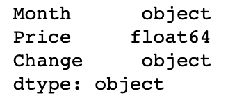

Predicting the price of rice using prophet
Prophet is a procedure for forecasting time series data. It is based on an additive model where non-linear trends are fit with yearly and weekly seasonality, plus holidays. It works best with daily periodicity data with at least one year of historical data. Prophet is robust to missing data, shifts in the trend, and large outliers. Being raised in south India, Rice is my families staple diet. I intend to use the price history of Rice and Prophet to predict the future price of rice. Are there opportunities to stack and save!
The rice.csv file, contains all price of rice in Indian currency since 2014. This data was obtained from www.indexmundi.com.
Loading up pandas and the purchases data:
import pandas as pd
import numpy as np
from matplotlib import pyplot as plt
%matplotlib inline
from fbprophet import Prophet
Creating a dataframe with rice.csv
import pandas as pd
price = pd.read_csv('data/rice.csv')
price = pd.DataFrame(price)
price.tail()
Though the data set is quite simple, time for some basic EDA. The 'Price' column should be indexed as a float instead of string
price['Price']= (price['Price'].str.replace(',',''))
price['Price'] = (price.Price.astype(float))
price.dtypes

Prophet only takes data as a dataframe with a ds (datestamp) and y (value we want to forecast) column. So first, let’s convert the dataframe to the appropriate format. This is followed by the below steps:
Create a dataframe with the dates for which we want a prediction to be made with make_future_dataframe(). Then specify the number of days to forecast using the periods parameter.
Call predict to make a prediction and store it in the forecast dataframe. What’s neat here is that you can inspect the dataframe and see the predictions as well as the lower and upper boundaries of the uncertainty interval.
price = price[['Month', 'Price']]
price.columns = ['ds', 'y']
price.tail()
Import prophet
from fbprophet import Prophet
In order to forecast values one year into the future we need to use the .make_future_dataframe. Since we are dealing with data on monthly frequency, we have to set the regressor know about this. Two parameters - periods and freq are used to set this explicity.
r = Prophet()
r.fit(price)
future = m.make_future_dataframe(periods=12, freq='M')
print(future.tail())
future_price = m.predict(future)
future_price[['ds', 'yhat', 'yhat_lower', 'yhat_upper']].tail()
Visualizing the prediction
The forecast can be plotted by calling plot and passing in the forecast dataframe. The black dots represent outliers and the light-blue shaded regions are the uncertainty range. It looks like the forecast is signalling a sharp decrease in Rice price for the next 3 months and normalizing in the medium range (3- 12 months).
pd.plotting.register_matplotlib_converters()
m.plot(forecast);
m.plot_components(forecast);

We can interpret that the price trend in on a increamental path (keep up with other grocery price trends). Yearly seasonality of price appears to be most expensive in Febraury and lowest in April.
Evaluate the Predictor
Keeping in line with other regressors of SciKit, Prophet allows us to perform cross validation. Use the cross_validation() function on the model and specify the forecast horizon with the horizon parameter. Next, call performance_metrics() to get a table with various prediction performance metrics.
from fbprophet.diagnostics import cross_validation, performance_metrics
df_cv = cross_validation(r, horizon='90 days')
df_p = performance_metrics(df_cv)
df_p.head(5)
from fbprophet.plot import plot_cross_validation_metric
fig3 = plot_cross_validation_metric(df_cv, metric='mape')
We plot the mean absolute percent error (MAPE) instead of the mean squared error (MSE) simply because it is easier to interpret. We see for this forecast that accuracy fluctates between 10 to 20% over a course of 90 days.
Conclusion
Prophet offers easily mode of predicting time series data based on historical time series data. It also offers various visualization and thus is a well rounded regression tool.